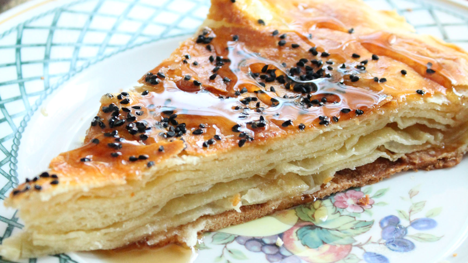

Bint Al Sahn

Description
Bint al Sahn is probably my absolute favorite Yemeni dish (along with shai haleeb).
It is often translated as honey cake into English,
but in reality I think it falls more under the category of a rich, flaky,
bread with is served with honey and melted ghee.
Ingredients
Dough Ingredients
- 4 cups of bread flour
- 4 eggs
- 1/4 cup of water + about 1/4 additional water, more or less
- 3/4 cup melted butter or ghee
- 1 tsp. salt
- 1 tsp. yeast
- 1/4 cup additional melted butter or ghee
- Black cumin seeds or sesame seeds
- 1 Egg Yolk for the egg wash
Steps
-
Dissolve the yeast in 1/4 cup water. Mix flour, 4 eggs, 3/4 cup butter, salt,
and yeast/water mixture together and knead for 10-15 minutes by hand or using
a mixer. At this point, add the extra water slowly until the dough is soft and
smooth but does not stick to your hands. I used about 1/4 cup additional water but
this may vary depending on the climate where you live. Alternatively, place ingredients
in bread machine on dough cycle until well kneaded. Cover and let dough sit and relax
for 10 minutes.
-
Divide the dough in 8-10 pieces. Form each piece into a smooth ball with your hands and
place on a flat surface, coat lightly with oil and cover with a towel. Let the dough
rise for 30 minutes.
-
Grease a 14-inch round cake pan (you can also use a 12 or 10-inch pan) and set aside. Take one dough ball and toss it out by hand or roll it out on clean flat surface until it is very thin and you can see through it. Place this layer into the bottom of the pan and drizzle with some melted butter. Repeat this process for all 10 layers, each time adding a little bit of melted butter on top of each layer, except for the top layer.
-
Brush the toplayer with one beaten egg yolk and sprinkle with black cumin seeds or sesame seeds.
-
Place in preheated oven at 400 degrees Fahrenheit for about 18-20 minutes or until cake is golden brown